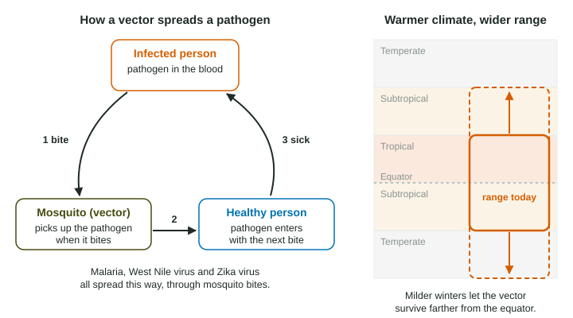

Not every threat to health is a chemical. Some of the deadliest are alive, or nearly so: bacteria, viruses and parasites that move from one person to the next. Whether they spread depends a lot on the environment: clean water, crowding, insects and climate. This page covers what pathogens are, how infectious diseases spread, the diseases the exam names, and how environmental change helps or hinders them.
Pathogens and infectious disease
A pathogen is anything that causes disease in the organism it infects, its host. The main kinds are bacteria, viruses, protozoa (single-celled organisms such as the malaria parasite), fungi and parasitic worms. An infectious disease is one caused by a pathogen that can pass from one host to another.
How a disease spreads decides how to stop it. The main routes:
| Route | How it spreads | Examples | What stops it |
|---|---|---|---|
| Waterborne | drinking water or food contaminated with feces | cholera, dysentery | sewage treatment, safe drinking water, handwashing |
| Airborne | droplets from coughs and sneezes | tuberculosis; SARS and MERS (respiratory viruses) | ventilation, less crowding, treatment, masks |
| Vector-borne | the bite of an insect or other carrier | malaria, West Nile virus, Zika virus (mosquitoes); plague (fleas) | removing breeding sites, bed nets, repellents, rodent control |
Vectors
A disease vector is a living thing that carries a pathogen from one host to another without being the cause of the disease. Mosquitoes are the best-known vectors. When a mosquito bites an infected person, it takes in the pathogen with the blood. When it bites again, it passes the pathogen on.

Be careful with roles. In malaria, the pathogen is a protozoan parasite called Plasmodium, which infects red blood cells. The Anopheles mosquito is the vector. Plague works the same way with a different vector: the bacteria live in rodents, and fleas carry them to people.
Diseases to know
- Malaria: a protozoan spread by Anopheles mosquitoes; common in tropical regions, especially sub-Saharan Africa.
- Tuberculosis: a bacterial lung disease spread through the air; it thrives in crowded, poorly ventilated housing and is often treated with months of antibiotics.
- Cholera: a bacterial disease spread by water and food contaminated with sewage; causes severe diarrhea and dehydration.
- Plague: a bacterial disease of rodents, spread to people by flea bites.
- West Nile virus: a virus of birds, spread to people by Culex mosquitoes.
- Zika virus: spread mainly by Aedes mosquitoes; infection during pregnancy can cause birth defects.
- SARS and MERS: respiratory diseases caused by coronaviruses that passed from animals to people.
Why the environment matters
Infectious diseases are a much larger share of deaths in developing countries than in developed ones. The reasons are environmental and economic: untreated sewage in rivers used for drinking, crowded housing, limited health care and medicines, and warm climates where vectors thrive all year.
Climate change can make some of this worse:
- Vectors spread. Mosquitoes need warmth. As winters get milder, they survive farther from the equator and higher up mountains, bringing diseases to people with no history of them.
- Flooding. Heavier storms can overwhelm sewers and push sewage into drinking water, spreading waterborne disease.
Worked example: a full explanation. Explain how warmer temperatures could increase cases of a mosquito-borne disease.
If temperatures rise, milder winters let more mosquitoes survive in places that used to be too cold. The mosquito's range expands toward the poles and to higher elevations, so more people live where infected mosquitoes can bite them, and the number of cases increases.
Each link is named: warmer winters, more surviving vectors, a wider range, more bites, more cases. "Warming spreads disease" skips every link and earns little.
Drug resistance
When a drug is used against a pathogen, it kills the individuals that are sensitive to it. Any that happen to be resistant survive and multiply, so over many generations the population becomes harder to treat. This is natural selection, not a pathogen "learning" during its life. Overusing antibiotics and stopping a course of treatment early both speed it up; drug-resistant tuberculosis and malaria are serious examples.
Matching the solution to the route
Exam answers score when the solution fits the way the disease spreads. Waterborne: build sewage treatment and chlorinate drinking water, which kills the bacteria before people drink it. Vector-borne: drain standing water where mosquitoes lay eggs, or hand out insecticide-treated bed nets, which keep mosquitoes from biting at night. Airborne: improve ventilation and find and treat cases early. Treating water does nothing for malaria, and bed nets do nothing for cholera.